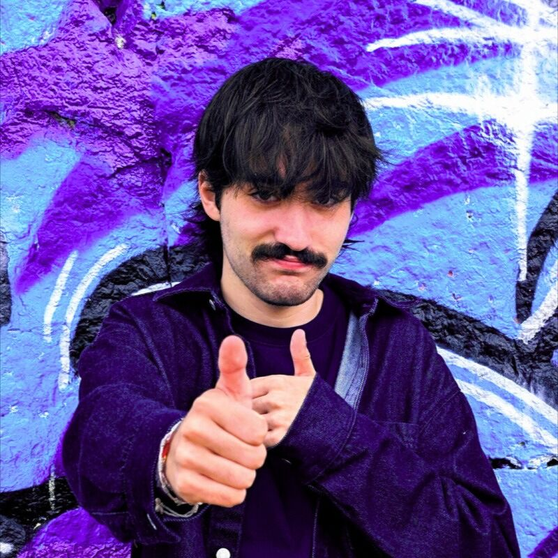
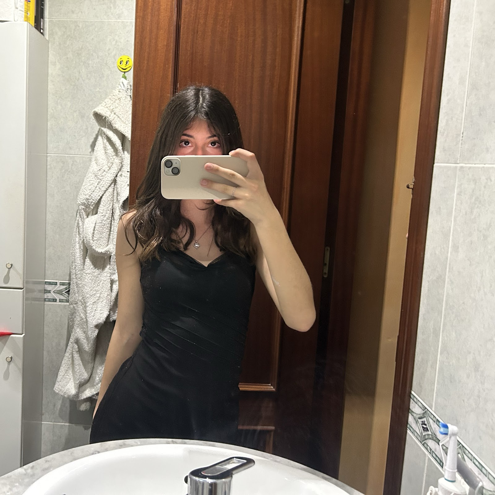
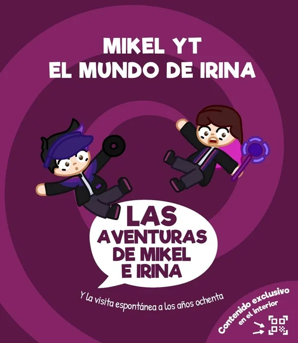

Una ciudad para explorar
Calles coloridas, tecnología misteriosa y vecinos que siempre parecen saber más de lo que cuentan.
Editorial juvenil
El universo de Las Aventuras de Mikel e Irina
Bienvenido al mundo de Tinta y Color, el hogar oficial de la serie Las Aventuras de Mikel e Irina, creada por Mikel YT e Irina de El Mundo de Irina.
Ciudad principal
Parisico es la ciudad donde Mikel e Irina viven, investigan pistas imposibles y descubren objetos que abren la puerta a nuevas aventuras.
Calles coloridas, tecnología misteriosa y vecinos que siempre parecen saber más de lo que cuentan.
Cada invento puede llevarlos a una nave espacial, a otra epoca o a un problema enorme.
El espacio-tiempo de Parisico esconde secretos que Lady Tempus quiere controlar.
Personajes



Autores
Mikel Alegre Marcos e Irina Fernández Cañón son los creadores de Las Aventuras de Mikel e Irina, una saga juvenil de ciencia ficción, misterio y aventuras.
Creador de contenido y escritor
Conocido como Mikel YT, nació el 23 de febrero de 2007. Crea contenido de videojuegos y publica libros juveniles de aventuras.
Coautora y protagonista literaria
Escritora y creadora española. En la saga, Irina vive en Parisico y encuentra el artilugio que desencadena la primera aventura interdimensional.
Libros
Tres historias juveniles con ciencia ficción, misterio, viajes temporales y la energía de Parisico.
Eventos
Encuentros, firmas y apariciones especiales de Las Aventuras de Mikel e Irina.
Comunidad
Conecta con los canales y redes de los creadores para conocer novedades, videos y contenido para fans.